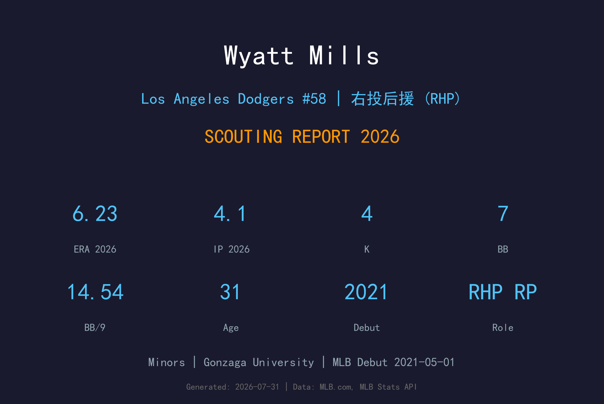
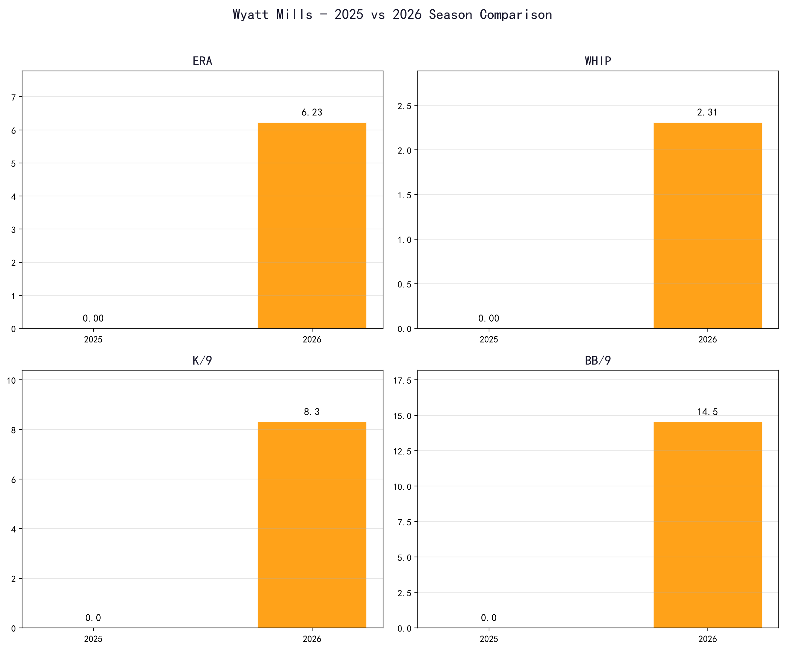
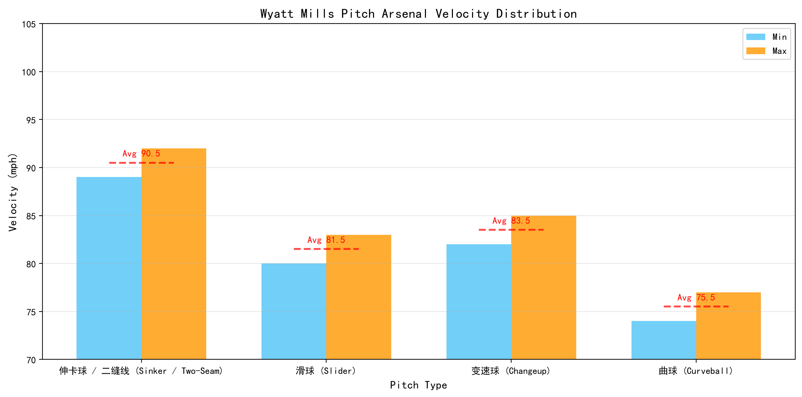
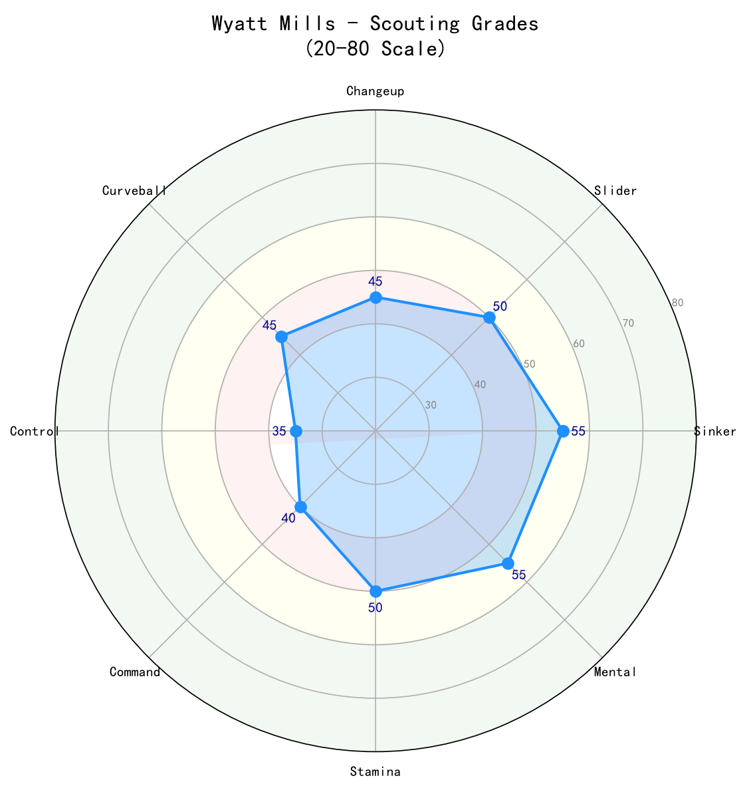

Los Angeles Dodgers #58 | 右投后援 (RHP) | Minors

Wyatt Mills 是一名经验丰富的右投后援，2021 年 5 月 1 日在西雅图水手完成大联盟首秀。他辗转水手、堪萨斯城皇家等队，2026 年加入洛杉矶道奇组织，目前位于小联盟，争取再次获得大联盟机会。
Mills 的球风以侧投/低肩放球点著称，擅长制造横向位移与 软弱击球。他的球速不突出，但依靠独特的放球角度与配球智慧在大联盟生存。2026 年在道奇的 4.1 局小样本中，ERA 6.23、WHIP 2.31，显示出控球问题仍需改善。
31 岁的 Mills 已经进入生涯后期，他的价值在于经验、低肩角度与能吃局数。若能在道奇牛棚中找到定位，他可以作为 situational reliever 或 吃局数投手 提供深度。
Mills 在冈萨加大学（Gonzaga University）成长为可靠的后援投手，以低肩侧投与控球能力著称。大学表现让他进入职业棒球雷达。
西雅图水手在 2017 年选秀第 11 轮选中 Mills。他在水手农场体系中逐步攀升，以低肩角度与变化球组合建立特色。
2021 年 5 月 1 日，Mills 代表水手登上大联盟。随后他也在堪萨斯城皇家等队效力，积累了丰富的上下大联盟经验。
2026 年 Mills 加入道奇组织，为牛棚提供 veteran depth。虽然年龄与球速限制了他的 天花板，但他的经验与独特角度仍具价值。

📈 上图为近三年核心数据趋势。柱状图高度代表该年度表现，便于快速比较球员状态的上升或下滑。
| 赛季 | G | GS | W-L | ERA | IP | K | BB | WHIP | K/9 |
|---|---|---|---|---|---|---|---|---|---|
| 2025 | — | — | —-— | — | — | — | — | — | — |
| 2026 | 5 | 0 | 0-0 | 6.23 | 4.1 | 4 | 7 | 2.31 | 8.31 |

⚾ 上图为各球种球速区间（蓝=最低球速，橙=最高球速，红线=平均值）。球速差与位移差越大，打者越难锁定单一球路。
89-92 mph
Mills 的招牌球种。低肩放球角度让伸卡球带有显著横向位移与下坠，是他的地面球制造机。他依靠这颗球让打者击出软弱滚地球。
80-83 mph
主要出局球，横向位移大。对付右打者内角与左打者外角都有威胁，但同样需要精准控制落点。
82-85 mph
偶尔用来对付左打者，改变速度节奏。使用频率不高，但能增加配球变化，避免打者坐待伸卡球。
74-77 mph
作为展示球种使用，用来在两好球后改变打者视线。大弧度下坠可与伸卡球的横向位移形成对比。
Mills 最大的武器不是球速，而是低肩/侧投的放球点。这种角度让打者难以适应，尤其面对同侧右打者时，伸卡球与滑球的组合能制造大量滚地球与挥空。对道奇而言，他可作为 situational reliever 使用。
4.1 局送出 7 次保送，BB/9 高达 14.54，这是不可接受的。无论角度多刁钻，无法把球投进好球带都会让自己和球队陷入被动。Mills 必须立即改善控球，否则很快会被取代。
31 岁的 Mills 已经进入生涯后期，不太可能成为道奇牛棚的长期答案。但他的经验和独特角度让他在特定 对位 中仍有价值，例如需要地面球或面对右打者集中的局数。
理想角色是低 leverage 的 吃局数投手 或 situational righty。他不适合高压局面，但在牛棚需要休息日时，可以上场吃下 1-2 局。

经验丰富、角度独特的侧投后援，但 2026 年控球崩盘。若无法迅速找回好球带，他的大联盟生涯可能进入尾声。
C+ 级 / 侧投牛棚深度
Mills 的未来取决于他能否在道奇体系中找回控球。他的伸卡球与角度仍有价值，但 31 岁的年龄意味着机会窗口有限。他需要在每一次大联盟机会中证明自己还能贡献。
2026 下半季：若控球改善，可能偶尔被征召上大联盟；否则继续在 AAA 担任 veteran depth。
2027：若无法稳定贡献，可能转战独立联盟或海外联赛。
2028+：大联盟生涯基本取决于 2026-2027 年的表现。
Wyatt Mills 出生于华盛顿州斯波坎（Spokane, WA），在冈萨加大学（Gonzaga University）度过大学时光。他以低肩/侧投姿势和控球能力进入职业棒球，2017 年被西雅图水手在第 11 轮选中。
在水手农场体系中，Mills 逐步成长为具备大联盟经验的牛棚投手。2021 年他完成大联盟首秀，此后也曾在堪萨斯城皇家等队效力。他的职业生涯一直与"角度专家"和"深度后援"的标签相伴。
2026 年加盟道奇后，Mills 希望在这座冠军球队中重新证明自己。他的经验和独特角度是资产，但年龄与控球问题也让他的未来充满不确定性。